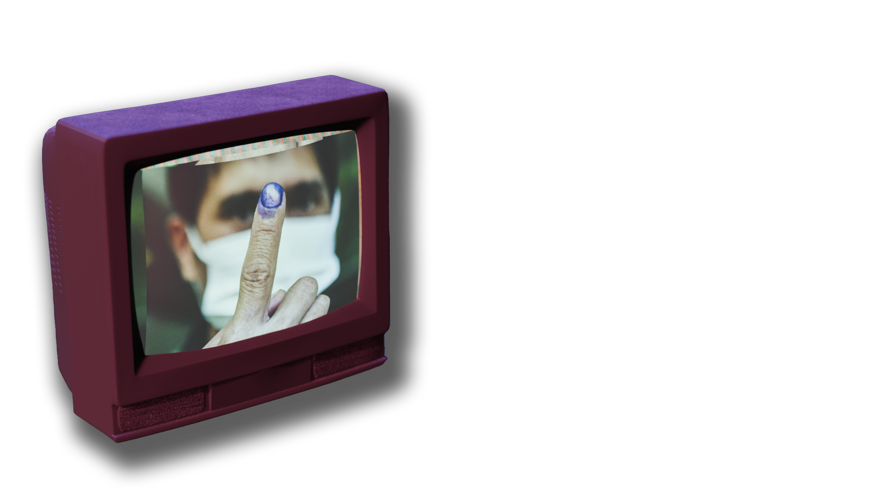
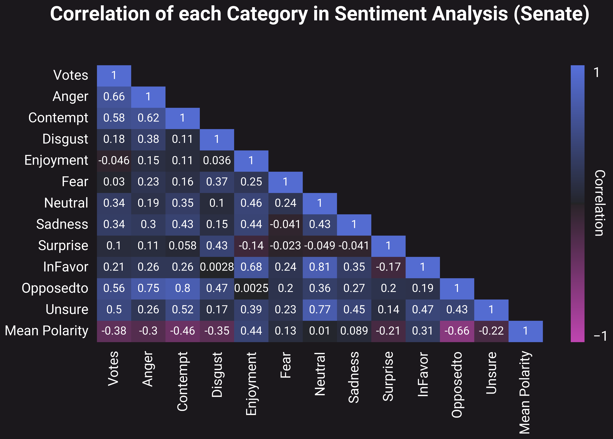
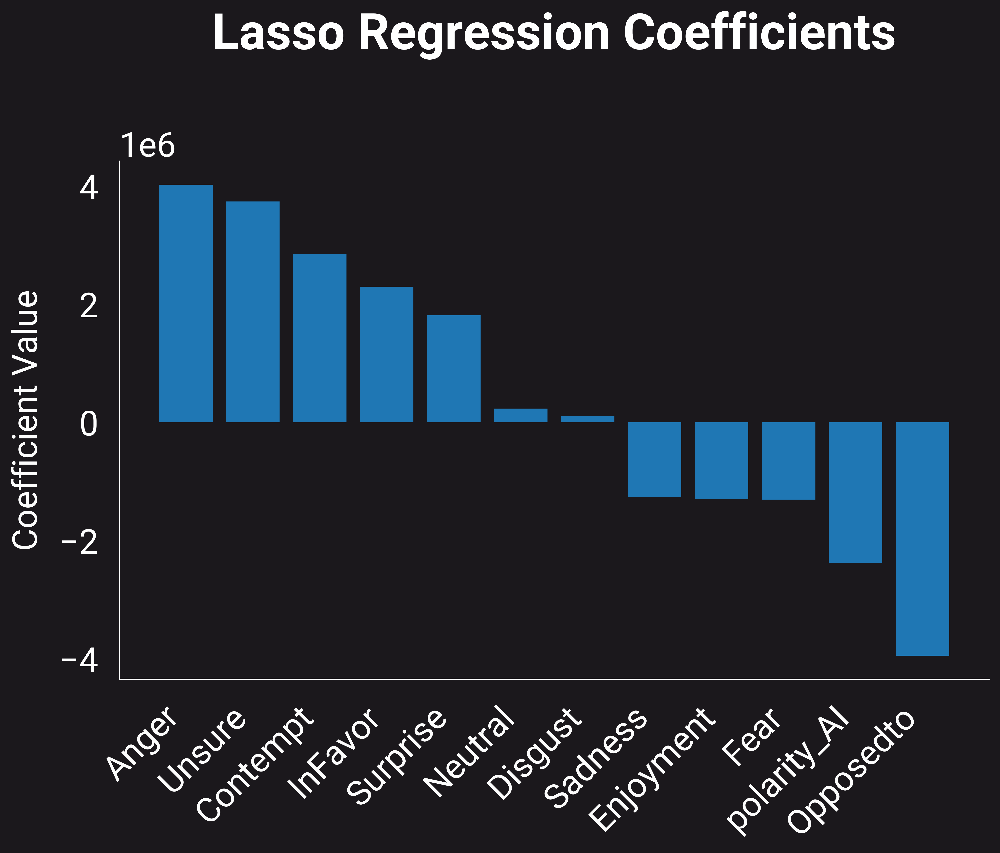
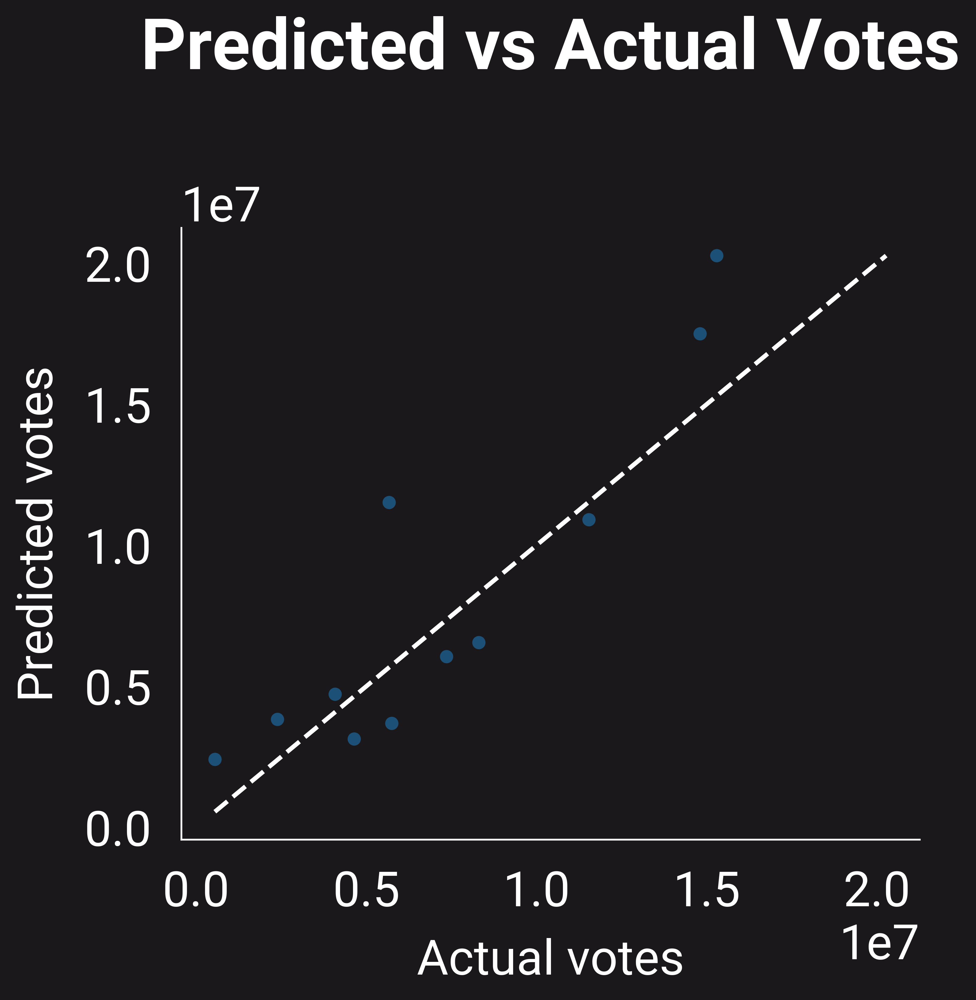

2025 Elections in a Nutshell.
An overview on the effects and relationships
of Social Media Exposure to the 2025
Philippine Midterm Election.


What we Found...
In a nutshell, we found that senatorial candidates with extreme negative emotions or have
negative opinions of have a substantial effect on a candidates votes, seeing the
correlation of Anger, Contempt, Sadness, Polarity, and OpposedTo, it is noticed that they
have moderate to strong positive correlations with their total amount of votes.
Interestingly, it is also seen that candidates who have Neutral tones and Unsure opinions also
have a moderate to strong positive correlation, indicating that a 'middle-ground' size-fits-all
candidate can be beneficial to attracting votes.
And with positive emotions and opinions, it is seen that there is little to no correlation
with InFavor and Enjoyment Respectively. And with polarities, it is seen that there is a moderate
negative correlation with votes, indicating that candidates with negative polarities tend to
receive more votes, following the trend seen with negative emotions and opinions.
A nutshell plot was not made for partylists, as it was found that all partylist categories have no
correlation to a partylist's votes, this may be from having a small amount of data for partylists from
the initial scraping done.
As a whole, it is seen that having a good social media presence, especially when negative, or having a
neutral 'middle-ground' stance tend to give more votes for a senatorial candidate.
Background
Held on May 12, 2025, Halalan 2025 is the midterm election situated in the Republic of the Philippines to determine the future officials to take hold of higher authoritarian decisions under the term of President Bongbong Marcos. 317 seats in the house of representatives, as well as 12 of the 24 seats in the senate were up for undertaking to form the congress (Wikipedia, 2025).
Research Questions.
- How did emotions and user sentiments impact the candidates to be chosen for the elections?
- What are the critical proponents that shape the decisions of Filipino voters over support for a candidate?
- How much did online trolling submissions influence actions over the elections?
- Are we able to predict the influence of social media on nationwide elections?
Proposed Solution.
We propose to enhance the magnification of these effects in correlation to the results made by the elections to hopefully raise discussions on the relevance of critical thinking and decision making.
Hypotheses.
Null
Social media sentiments have no significant level of influence on the likelihood of being elected
a Candidate during the 2025 Philippine National and Local Elections.
Alternative
Social media sentiments have a significant level of influence on the likelihood of being elected
a Candidate during the 2025 Philippine National and Local Elections.
Lets look at the Data.
An overview on the effects and relationships
of Social Media Exposure to the 2025
Philippine Midterm Election.
1.
the mentioned candidate or partylist
2.
the polarity of the tweet
3.
the tone of the tweet
4.
the 'perceived judgement' of a user
Context of the
Sentiments Dataset
Prior to performing the EDA, each tweet was ran through an LLM
(meta-llama/llama-4-maverick-17b-128e-instruct) to perform sentiment analysis in which the
following attributes were determined per tweet.
In the case that multiple candidates were mentioned in a tweet, a list will be returned containing
the corresponding tone, polarity, and judgement per candidate mentioned in that tweet. The particular
model, meta-llama/llama-4-maverick-17b-128e-instruct, was used for its balance between speed,
price, and accuracy based on its benchmarks on analysis (Artificial Index, 2025).
EDA and Sentiment
analysis notebooks
EDA notebook
Hypotheses under Correlation and Normality Tests
With p > 0.05 for all cases, the null hypothesis is accepted, that is, the data does not follow a normal distribution. Although Pearson Correlation and Spearman Correlation do not assume normality, with this, they may still be used to test for correlation.
Null
Social media sentiments have no significant level of influence on the likelihood of being elected a Candidate during the 2025 Philippine National and Local Elections.
Alternative
Social media sentiments have a significant level of influence on the likelihood of being elected a Candidate during the 2025 Philippine National and Local Elections.
Normality Test
Senators → Chi-square=9.600, p=0.143, dof=6 votes_cat Low Mid-Low Mid-High High polarity_cat Negative 3 1 0 1 Neutral 0 1 0 1 Positive 0 1 3 1
Partylists → Chi-square=3.281, p=0.773, dof=6 votes_cat Low Mid-Low Mid-High High polarity_cat Negative 0 1 1 1 Neutral 1 0 0 1 Positive 5 4 4 3
All → Chi-square=11.330, p=0.079, dof=6 votes_cat Low Mid-Low Mid-High High polarity_cat Negative 1 1 5 1 Neutral 1 0 1 2 Positive 7 7 2 5
Correlation Tests


Conclusion
Pearson correlation coefficient (polarity vs votes): -0.2784966690117171
Spearman correlation coefficient (polarity vs votes): -0.3678864219767173
Which is interpreted as a negative moderate correlation, therefore, we reject the null hypothesis. (Research Gate, 2018)
Our Research Questions
How did emotions impact the candidates to be chosen
for the elections?
neutral is most common tone
For Figure 3, most tweets showed a neutral tone, followed by enjoyment, contempt,
anger, disgust, sadness, surprise, and fear. This suggests that online discourse was
largely in the middle ground, balancing between negative and positive emotions, with
neutral tones possibly reflecting a tendency toward more factual or
evidence-based commentary.
mostly positive polarity
Figure 4 shows how tweet polarities are distributed across emotional tones.
Neutral polarity appears most often, especially with neutral and enjoyment tones,
while negative polarity is more associated with anger and contempt. This suggests
that tweets with balanced or mildly positive sentiment were more common, and
those with strong negative polarity tended to carry more intense emotions.
heatmaps on polarity
emotions are conditional
The heatmap in Figure 5 shows the emotional tones of tweets
mentioning senatorial candidates. Neutral is most common, especially
for Kiko Pangilinan and Bam Aquino, who also appear with enjoyment.
Imee Marcos has fewer mentions, showing neutral along with some anger and contempt.
Other candidates are linked with scattered tones, with fewer appearances of the other tones.

tones are relative
Figure 6 presents a heatmap of emotional tones in tweets mentioning
partylists. For Duterte Youth, anger and contempt are most common, with
some neutral and enjoyment also appearing. Makabayan, ML, Akbayan, BBM,
Kabataan, Bayan Muna, Magdalo, PBBM, Patrol, ACT-CIS, and ACT Teachers are mostly
associated with neutral and enjoyment tones, showing fewer of the other tones.
The remaining mentioned partylists are characterized primarily by neutral tones.

What are the critical proponents that shape the decisions of Filipino voters over support for a candidate?

senatorial candidate, with the heat being the average polarity of a user in the tweet.
same words, different emotions
Figure 8 showcases words parsed by the AI model that features a
correlation with respect to a mentioned candidate. For representative heidi
mendoza, an associated word relating to their persona was 'singer-songwriter',
with a negative polarity. The word 'bisaya' had differing polarities for each
candidate, with arlene brosas obtaining negative polarity and positive polarity for Ben Tulfo.

partylist, with the heat being the polarity of the said tweet.
1 partylist 1 word
The graph showcases similar context from Figure 8 but
for comments featuring mentions of partylists. For figure 9,
'legacy' had negative polarities for duterte youth whilst being
positive for mamamayang liberal (ml) partylist. The word 'problema'
also had differing polarities for bayan muna and makabayan partylist,
having negative and positive polarities respectively. Other polarities
had harmonious collerations with respect to the words they are associated with.

halalan 2025?!!
Figure 7 forecasts a word cloud in correspondence of the most
frequent words mentioned by users. Candidates including kiko pangilinan,
bam aquino, and duterte having larger prevalence over most candidates in the graph.
How much did online social media sentiments influence actions
over the elections?

kiko x bam
Figure 10 showcases the count of mentions in perceived judgement
towards a candidate. For most representatives, frequency lies at around
20-40, with the exception of kiko pangilinan and bam aquino gaining 100-120
counts of perceived judgements ruled in favor. Imee marcos also gained significant
traction of opposition, ranging from 40-60 mentions for netizens.

the plot thickens
Figure 11 features perceived judgement for partylists
in relation to the amount of mentions based on a user's judgement.
Makabayan, duterte youth, and akbayan partylists earned high mentions
of judgement towards favor of the group with noticeable oppositions
from the pbbm partylist.
candidate mentions
(The correlation tests done in the hypothesis testing earlier may also be used
for this research
question.)
Kiko and Bam.
Figure 12 shows the fractions of the mentions of senatorial candidates in the
dataset. It is seen in Figure 12 that Kiko and Bam had dominated their social media
prescence being followed by Heidi Mendoza Imee Marcos, and Bong Go. This may be from their
poularity in social media, especially in X (Twitter), where a lot of individuals that post
are the youth, which their campaign massively focuses on. These are then followed by Imee
Marcos and Bong Go, who are also popular candidates, known negatively or positively in
social media.
A whole third.
Figure 13 shows the fractions of the partylists mentioned in the dataset. Where it
is seen that Duterte Youth takes 32.2% of the chart, followed by Makabayan, ml, and
Akbayan. The popularity of Duterte Youth may be attributed to the popularity of former
president Rodrigo Roa Duterte, which had a huge following in social media, albeit
controversial, taking in negative and positive emotions. The partylist that follow,
Makabayan, Ml, and Akbayan, may be attributed to the rise of the Youth in social media,
which these partylist heavily target, and are supported by, causing a great following.
Are we able to predict the influence of social media on nationwide elections?
To be answered in the modelling stage
references found at documentation.
The Model
Lets see what we can predict.
Back to topNow knowing that some categories have a correlation with a senatorial candidates' votes, let's try to create a model for predicting a candidate's votes using the categories from the Sentiment Analysis. Considering that partylists dont have a correlation with a candidate's votes, a model will not be created.
How did it perform?
R2 Score of
0.6376646934020613
RMSE of
2759968.114456545
What did we use?
Alpha of
1.0
Model of
Ridge Regression
How did we make it?
Knowing that some features have a correlation with a senatorial candidate's votes, we used
a RidgeRegression model to fit our training data, settting X to all the features, and
setting y to be the total votes of each candidate. We split our data into test and
training sets to determine the metrics of the model later on. After fitting the model,
with alpha an alpha set to 1.0, the model was used to predict the votes of each candidate
in the test set, which gave the scores and errors seen on the left.
Ridge regression was chosen for its ability to consider multicollinearity between features,
which is more than apparent with our nutshell plot. And in terms of context, this 'makes sense'
as Anger would be naturally correlated with a Negative Polarity, and an Infavor judgement would
be negatively correlated with an OpposedTo judgement. With this, Ridge Regression was seen
to be a better 'fit' for a model.
Prior to picking our model, we had also tried a Lasso Model, as well as tried different alphas
for our Ridge Regression, along with feature selection through RFE on sklearn. It was seen
that the Ridge Regression with an alpha of 1.0 performed the best out of all the configurations
and models that were tried.
Modelling notebook
Google Colab

Negative Prevails
After fitting the model, the following coefficents are now seen, with Anger having
the highest positive coefficient, which closely matches what was seen in the nutshell
plot, where Anger had the strongest positive correlation with a candidate's votes.
Following that trend, Unsure also had a high positive coefficient. Suprisingly, OpposedTo
has a negative coefficient, despite having a strong positive correlation earlier, this may
be attributed to the train-test split, where a set of candidates with low OpposedTo values
may have had low votes, leading to a negative coefficient. With Polarities, it is still
seen that a candidate's average polarity has a negative coefficient, matching what was
seen with the correlation in the nutshell plot.
How does it perform?
After the model was fitted, the test sets were fed onto it, and its predicted values
from the X test set were compared to the actual y test values.
This gave an R^2 value of ~0.63766469, showing that the model has a moderate fit to the data,
indicating that the features used have an effect on a candidate's votes, and 'closely' matches
the training data.
It may be seen that there are only 11 test points, attributed to the small set of candidates
with social media prescence from the initial scraping done. In the future, a more thorough
scrape shall be done to increase the dataset to have a better test for the model.
This also have an RMSE of ~2759968.114456545, showing that there is a large error in the model's
prediction in the millions, indicating that more data is still needed to train the model to
do a better fit.
This high error may also be attributed to outliers in the data, especially with some candidates
dominating with votes. This may also be a cause of the votes being in the millions, causing
a similar error scale to be seen.

Discussion
What did we learn?
Back to topAddress limitations and recommendations here.
Conclusion
In a nutshell?
Back to topNow knowing that some categories have a correlation with a candidates votes, let's try to create a model for predicting a candidate's votes using the categories from the Sentiment Analysis.
About Us!
Meet the people behind the data mess.
Back to top
Hi! I'm Lance
bs computer science | chill guy
Trying to survive the harsh environment of computer science. Most of my time is spent
finishing academic tasks so I can graduate sooner. Aside from that, I enjoy producing music
and discovering new sounds.
Hey, I'm Stephen!
bs computer science | Developer | Minecraft builder | Stardew Valley farmer
A student-journalist/data analyst with a passion for knowledge! You can find me
running deep into projects integrating social sciences and natural sciences with technology.
In my free time I love to play open-world Sandbox Games like Minecraft and Stardew Valley.


Hellooo I'm Geraldine
bs computer science | Terrarian | modern family enjoyer
A standard npc that likes to spend time watching tv series. in my free time i like to
dabble in design and play terria. my interests include k-pop and looking for new hobbies
with my friends. if you like any of the things i mentioned we'd definitely get along!